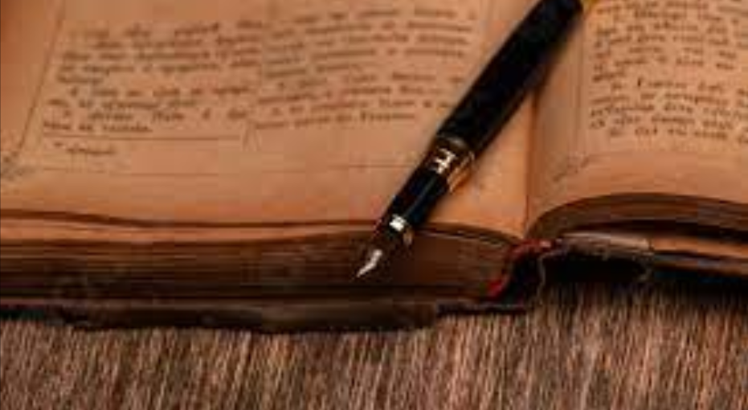
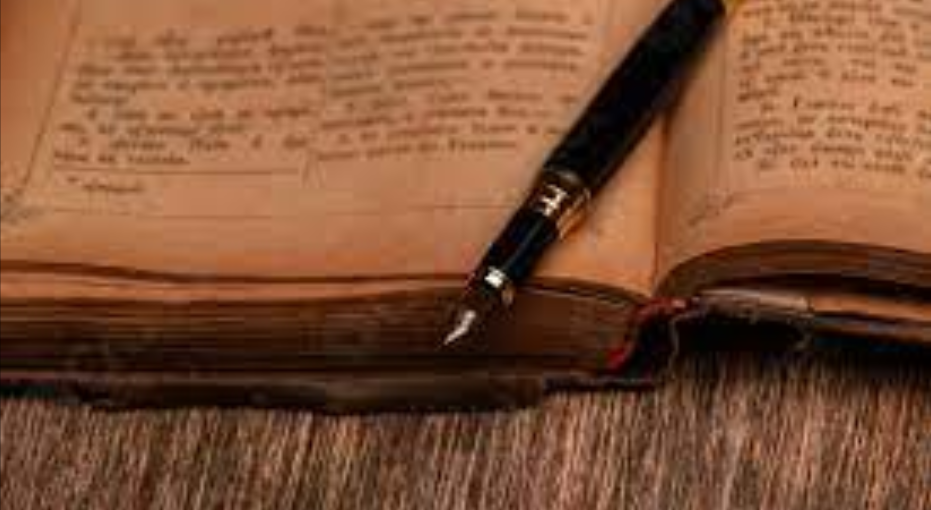
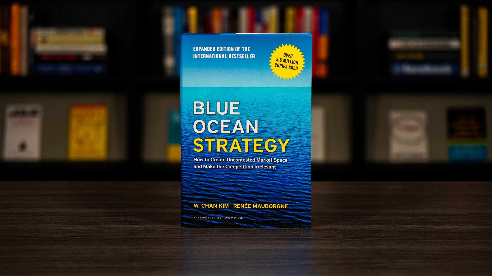
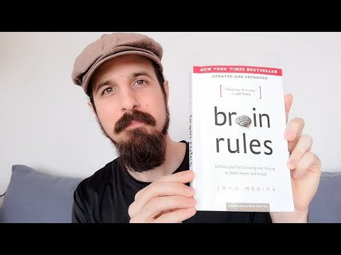
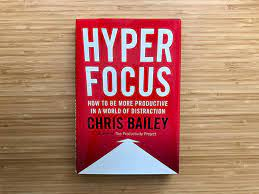

What is books do you know? according to wikipedia books are: A book is a medium for recording information in the form of writing or images, typically composed of many pages bound together and protected by a cover.according to meaning: make an official note of the personal details of (a person who has broken a law or rule).
books have a lots of different meaning.according to me books are our loyal friends.they say us about how to we make our life better,they share to us a lot of usefull informations.what helps to increase our mental ability or IQ level.Books loves their lovers.Books are advantures,magical,knowledgeful,intresting and funny.
In this web page I will share to you about some best selling selfhelp and bussiness books.Here your books are:
1)Blue Ocean Strategy

Recognized as one of the most iconic and impactful strategy books ever written, Blue Ocean Strategy argues that cutthroat competition results in nothing but a bloody red ocean of rivals fighting over a shrinking profit pool.
Embraced by organizations and industries worldwide, Blue Ocean Strategy is a global phenomenon that has sold over 4 million copies.
It is being published in a record-breaking 46 languages and is a bestseller across five continents.
First published in 2005, it was updated and expanded with fresh content in 2015.
More than 4 million copies sold worldwide
A bestseller across five continents
Translated into 46 languages
“One of the bestselling business books of the century” – Financial Times
“Blue Ocean Strategy is the most successful book on business master-planning” – The Economist
Featured on more than 300 bestseller lists across the globe
Thinkers50 Strategy Award for Best Business Book of the decade
The Fast Company Leadership Hall of Fame
Winner of the Carl S. Sloane Award for Excellence in Management Consulting
Selected as one of the 40 most influential books in the History of the People’s Republic of China (1949-2009) along with Adam Smith’s The Wealth of Nations.
2)The Miracle Morning
THE MIRACLE EQUATION
You Are Only Two Decisions Away from Everything You Want
If you are a regular in the personal development world, you’ve already heard that anything is possible. Yet “possible” isn’t enough to get you out of bed in the morning fueled with the internal clarity and motivation to tackle your biggest dreams. With Hal Elrod’s next book— this book —he wanted to give you a proven process that would move your success from possible…to probable…to inevitable.
From making millions of dollars to overcoming life-threatening health challenges to achieving everything you’ve ever wanted, including simply being happy…there is one timeless, a proven formula that the world’s top achievers, in all walks of life, have used for centuries to transcend their limitations and achieve extraordinary levels of success and fulfillment. The Miracle Equation is that formula. As you’ll learn, the Miracle Equation is deceptively simple in its explanation but extremely rare in its execution. It consists of only two decisions: Unwavering Faith and Extraordinary Effort.
Brain Rules

Brain Rules was written by John Medina, a developmental molecular biologist.
The full name of the book is Brain Rules: 12 Principles for Surviving and Thriving at Work,
Home, and School. The book has tried to explain how the brain works in twelve perspectives:
exercise, survival, wiring, attention, short-term memory, long-term memory, sleep, stress,
multisensory perception, vision, gender and exploration.[2] Each chapter demonstrates
things scientists already know about the brain, and things we as people do that can affect
how our brain will develop.When the author has encountered certain articles and books with startling claims, such as, "Mozart Effect", on how brain functions and how we should teach or do business, he did not find any supporting evidence in brain science literature he was familiar with. He has concluded that all these misconceptions are there because brain scientists have not sufficiently talked to people at other domains, such as teachers, business professionals, education majors, etc. Therefore, he has decided to close this gap by writing this book.
Book of Soyga
The Book of Soyga, also titled Aldaraia, is a 16th-century Latin treatise on magic, one copy of which was owned by the Elizabethan scholar John Dee. After Dee's death, the book was thought lost until 1994, when two manuscripts were located in the British Library (Sloane MS 8) and the Bodleian Library (Bodley MS. 908), under the title Aldaraia sive Soyga vocor, by Dee scholar Deborah Harkness. The Sloane MS 8 version is also described as Tractatus Astrologico Magicus, though both versions differ only slightly.
Jim Reeds notes that the Bodley 908 MS consists of 197 pages including Liber Aldaraia (95 leaves), Liber Radiorum (65 pages), and Liber decimus septimus (2 pages), as well as a number of shorter and unnamed works totaling approximately ten pages. The final 18 pages of the manuscript contain 36 tables of letters. The Sloane MS 8 manuscript consists of 147 pages, mostly identical to the Bodley manuscript, with the exception that the tables of letters appear on 36 pages, and the Liber Radiorum is presented in a two-page summarized version.
hyper focus

Hyperfocus helped me recognize the limits of my attentional space and make my environment more conducive to focus.” —The New York Times
Our attention has never been as overwhelmed as it is today. Many of us recognize that our brains struggle to multitask. Despite this, we feel compelled to do so anyway while we fill each moment of our lives to the brim with mindless distraction. Hyperfocus provides profound insights into how you can best take charge of your attention to achieve a greater sense of purpose and productivity throughout the day.
The most recent neuroscientific research reveals that the brain has two powerful modes that can be unlocked when we use our attention effectively: a focused mode (hyperfocus), which is the foundation for being highly productive, and a creative mode (scatterfocus), which enables us to connect ideas in novel ways. Hyperfocus helps you access each of the two mental modes so you can concentrate more deeply, think more clearly, and work and live more deliberately every day.
This book examines topics such as:
– identifying and dealing with the four key types of distraction and interruption;
– establishing a clear physical and mental environment in which to work;
– controlling motivation and working fewer hours to become more productive;
– taking time-outs with intention;
– multitasking strategically; and
– learning when to pay attention and when to let your mind wander wherever it wants to.
By transforming how you think about your attention, Hyperfocus reveals that the more effectively you learn to take charge of it, the better you’ll be able to manage every aspect of your life.